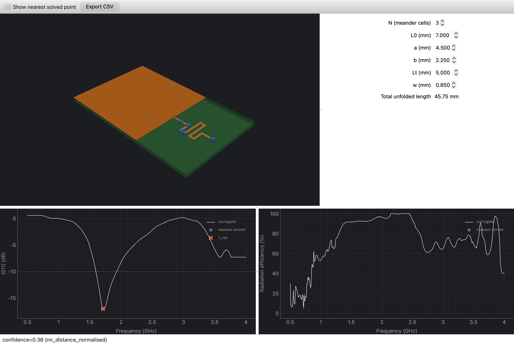

Background
Meander-line antennas pack a resonant length into a small PCB footprint by folding the trace back on itself, which is exactly what makes them hard to design by hand: the number of meander cells (N), trace width, and segment lengths all interact, and a small geometry change shifts resonant frequency and radiation efficiency substantially. Exploring that design space one full-wave solve at a time is slow — each openEMS FDTD run took roughly 90 seconds in this setup. I built this project to see whether a machine-learned surrogate, trained on a real design-of-experiments sweep rather than a rule of thumb, could stand in for the solver during interactive design exploration.
Approach
I wrote a parametric CSXCAD/openEMS geometry generator for meander antennas across N = 2–5 meander cells, and ran Sobol design-of-experiments sweeps inside a Dockerized openEMS 0.0.35 / CSXCAD build (openEMS has no native macOS support, so every solve runs containerized). That produced 72 real FDTD solves per N — 60 for training, 12 held out for validation, 288 solves in total. Each solve yields S11, resonant frequency, radiation efficiency, the full-band radiation pattern, and the frequency-domain near field, and each of those four outputs got its own fitted surrogate model, all wrapped behind a single desktop GUI.

Process
Before trusting any DoE data, I validated the FDTD setup itself with a mesh-convergence study — comparing 395,850, 1,351,814, and 7,365,600-cell meshes on the same geometry — and confirmed resonant frequency moved less than 1.3% between the two finest meshes before locking in the mesh settings used for the full sweep.

I also layered two materials-axis effects on top of the geometry surrogate, both fit from additional real solves rather than assumed from textbook formulas: substrate temperature (6 real temperature points) and substrate dielectric constant (24 real solves across 6 contrasting geometries). The dielectric sweep turned up a genuine physics finding: this antenna is roughly half as dielectric-sensitive as textbook microstrip theory predicts, and the sensitivity depends materially on N rather than trace width — so the correction model resolves per-N instead of using one blended curve.
Results
- A packaged, signed desktop app turns a ~90-second FDTD solve into an instant, slider-driven prediction across S11, resonant frequency, efficiency, radiation pattern, and E-field.
- Mesh convergence was verified before trusting the training data, not assumed — standard practice carried over from paid FEA work.
- The app discloses its own accuracy gap rather than hiding it: held-out validation on N=3 currently shows 4.6% mean / 14.6% p95 error on resonant frequency, 5.1 dB on |S11|, and 7.1 points on radiation efficiency — short of the 2% / 2 dB / 3-point targets, because the DoE reached 72 points per N against an original 256-point target. The fix is more training data, not model tuning, and the app says so.
- The dielectric-sensitivity finding above is a real, measured result, not a value assumed from theory.
Live demo
Screen recording of the packaged app: adjusting geometry sliders and watching the surrogate's S11, efficiency, and 3D geometry update in real time.